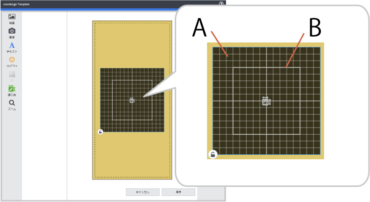

Al crear una plantilla específica para su uso en la impresión de metal, se crea un área de impresión en metal (80 mm × 80 mm) y un área de edición (50 mm × 50 mm) en el centro de la plantilla.
 A: Área de impresión en metal B: Área a editar
El área de impresión en metal indica el rango de impresión dentro de la plantilla. Si arrastra esta área para moverla, la posición de impresión en metal relativa al objetivo cambia.
: Actívelo cuando no desee cambiar la posición o el tamaño del objeto.
Distribuya las imágenes, los caracteres y las áreas de edición dentro del área de impresión en metal. Si hay elementos fuera de esta área, se producirá un error y no podrá guardar la plantilla. A veces, es mejor limitar las posiciones de diseño del objeto en función del modelo que se esté utilizando. Un ejemplo es cuando es posible que los resultados de la impresión en metal sean borrosos aunque todos los artículos estén dentro del área de impresión en metal. Para obtener más información, consulte la documentación del modelo que está utilizando.